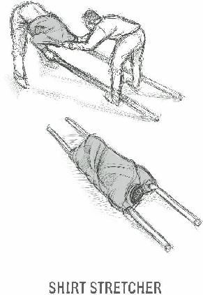
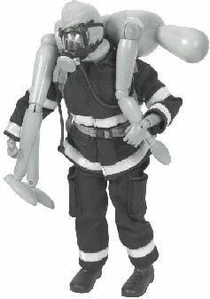
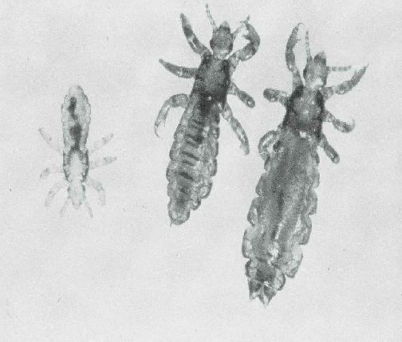
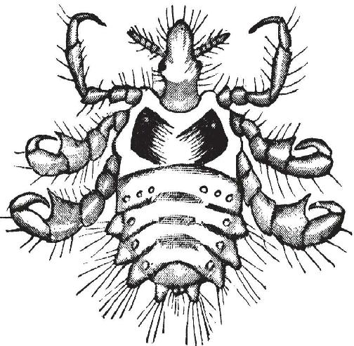
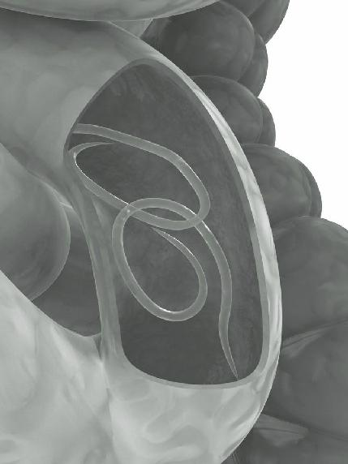
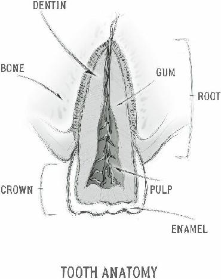
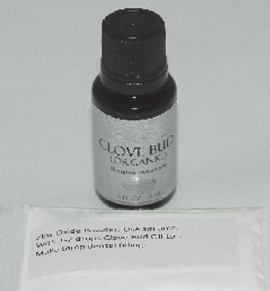

Nurse who, as she entered the area, was struck by a falling piece of concrete. She sustained a head injury and died five 5 days later.
As you arrive, be as certain as you can that there is no ongoing threat. Do not rush in there until it is certain that you and your helpers are safe entering the area.
2. Sizing up the Scene: Ask yourself the following questions:
What’s the situation? Is this a mass transit crash? Did a building on fire collapse? Was there a car bomb?
How many injuries and how severe?
Are there a few victims or dozens? Are most victims dead or are there any uninjured that could assist you?
Are they all together or spread out over a wide area?
What are possible nearby areas for treatment/transport purposes?
Are there areas open enough for vehicles to come through to help transport victims?
3. Sending for Help: If modern medical care is available, call 911 and say (for example): “I am calling to report a mass casualty incident involving a multi-vehicle auto accident at the intersection of Hollywood and Vine (location).
At least 7 people are injured and will require medical attention. There may be people trapped in their cars and one vehicle is on fire.”
In three sentences, you have informed the authorities that a mass casualty event has occurred, what type of event it was, where it occurred, an approximate numbers of patients that may need care, and the types of care or equipment that may be needed. I’m sure you could do even better than I did above, but you want to inform the emergency medical services without much delay.
If you are the current Incident Commander, get your walkie-talkie or handie-talkie and notify base camp of the situation and what you’ll need in terms of personnel and supplies.
If you are not medically trained, contact the person who is the group medic. The most experienced medical person who arrives then becomes the new Incident Commander.
4. Set-Up: Determine likely areas for various triage levels (see below) to be further evaluated and treated. Also, determine the appropriate entry and exit points for victims that need immediate transport to medical facilities, if they exist. If you are blessed with lots of help at the scene, determine triage, treatment, and transport team leaders.
5. S.T.A.R.T.: Triage uses the acronym
S.T.A.R.T., which stands for Simple Triage
And Rapid Treatment. The first round of triage, known as “primary triage”, should be fast (30 seconds per patient if possible) and does not involve extensive treatment of injuries. It should be focused on identifying the triage level of each patient. Evaluation in primary triage consists mostly of quick evaluation of respirations (or the lack thereof), perfusion (adequacy of circulation), and mental status. Other than controlling massive bleeding and clearing airways, very little treatment is performed in primary triage.
Although there is no international standard for this, triage levels are usually determined by color:
Immediate (Red tag): The victim needs immediate medical care and will not survive if not treated quickly
(for example, a major hemorrhagic wound/internal bleeding). This person has top priority for treatment.
Delayed (Yellow tag): The victim needs medical care within 2-4 hours. Injuries may become life-threatening if ignored, but can wait until Red tags are treated (for example, open fracture of femur without major hemorrhage).
Minimal (Green tag): Generally stable and ambulatory
(“walking wounded”) but may need some medical care
(for example, broken fingers, sprained wrist).
Expectant (Black tag): The victim is either deceased or is not expected to live (for example, open fracture of cranium with brain damage, multiple penetrating chest wounds).
Knowledge of this system allows a patient marking system that easily allows a caregiver to understand the urgency of a patient’s situation. It should go without saying that, in a power-down situation without modern medical care, a lot of red tags and even some yellow tags will become black tags. It will be difficult to save someone with major internal bleeding without surgical intervention.
The above is good to know, but let’s go through an example of a mass casualty incident; we’ll discuss how you would perform your triage duties.
Primary Triage: MCI scenario
Here’s our hypothetical scenario: you are in your village near the border with another (hostile) group. You hear an explosion. You are the first one to arrive at the scene, and you are alone. There are about twenty people down, and there is blood everywhere. What do you do?
Referring back to the 5 S’s, let’s say that you have already determined the SAFETY of the current situation and SIZED UP the scene. There appears to have been a bomb that exploded. There are no hostiles nearby, as far as you can tell, and there is no evidence of incoming ordinance. Therefore, you believe that you and other responders are not in danger. The injuries are significant
(there are body parts) and the victims are all in an area no more than, say, 30 yards.
The incident occurred on a main thoroughfare in the village, so there are ways in and ways out. You have
SENT a call for help on your handie-talkie and described the scene, and have received replies from several group members, including a former ICU nurse who is contacting everyone else with medical experience. The area is relatively open, so you can SET UP different areas for various triage categories. Now you can
START (Simple Triage And Rapid Treatment).
You will call out as loudly as possible: “I’m here to help, everyone who can get up and walk and needs medical attention, get up and move to the sound of my voice. If you are uninjured and can help, follow me.”
You’re lucky, 13 of the 20, mostly from the periphery of the blast, sit up, or at least try to. 10 can stand, and 8 go to the area you designated for walking wounded. These people have cuts and scrapes, and a couple of them are limping; one has obviously broken an arm. 2 beaten-up but sturdy individuals join you. By communicating, you have made your job as temporary
Incident Commander easier by identifying the walking wounded (Green Tags) and getting some immediate help. You still have 10 victims down.
You then go to the closest victim on the ground.
Start right where you are and go to the next nearest victim in turn. In this way, you will triage faster and more effectively than trying to figure out who needs help the most from a distance or going in a haphazard pattern.
Let’s cheat just a little and say that you happen to have SMART tags in your pack. SMART tags are handy tickets which allow you to mark a particular triage level on a patient. Once you identify a victim’s triage level, you remove a portion of the end of the tag until you reach the appropriate color and place it around the patient’s wrist.
You could, instead, use colored adhesive tape, colored markers, or numbers placed on the forehead. If you use numbers:
Priority 1 is immediate/red (top priority)
Priority 2 is delayed/yellow
Priority 3 is minimal/green
Priority 4 is dead/expectant/black
The number method is used in some other countries; it is useful if you’re color blind).
It is important to remember that you are triaging, not treating. The only treatments in START will be stopping massive bleeding, opening airways, and elevating the legs in case of shock. As you go from patient to patient, stay calm, identify who you are and that you’re here to help.
Your goal is to find out who will need help most urgently
(red tags). You will be assessing RPMs (Respirations,
Perfusion, and Mental Status):
Respirations: Is your patient breathing? If not, tilt the head back or, if you have them, insert an oral airway
(Note: in a MCI triage situation, the rule against moving the neck of an injured person before ruling out cervical spine injury is, for the time being, suspended) If you have an open airway and no breathing, that victim is tagged black. If the victim breathes once an airway is restored or is breathing more than 30 times a minute, tag red. If the victim is breathing normally, move to perfusion.
Perfusion: Perfusion is an evaluation of how normal the blood flow or circulation is. Check for a (wrist or neck) pulse and/or press on the nail bed (I sometimes use the pad of a finger) firmly and quickly remove. It will go from white to pink in less than 2 seconds in a normal individual. This is referred to as the Capillary
Refill Time (CRT). If there is no pulse or it takes longer than 2 seconds for nail bed color to return to pink, tag red. If a pulse is present and CRT is normal, move to mental status.
Mental Status: Can the victim follow simple commands (“open your eyes”, “what’s your name”)? If the patient is breathing and has normal perfusion but is unconscious or disoriented: Tag red. If they can understand you and follow commands, tag yellow if they can’t get up or green if they can. remember that, as a consequence of the explosion, some victims may not be able to hear you well.
It might be easier to remember all this by just thinking 30 -2-Can Do:
30 (respirations)
2 (CRT)
Can Do (Commands)
If there is any doubt as to the category, always tag the highest priority triage level. Not sure between yellow and red? Tag red. Once you have identified someone as triage level red, tag them and move immediately to the next patient unless you have major bleeding to stop. Any one RPM check that results in a red result tags the victim as red. For example, if someone wasn’t breathing but began breathing once you repositioned the airway, tag red, stop further evaluation if not hemorrhaging and move to the next patient. Elevate the legs if you suspect shock.

Now, let’s return to our mass casualty event. You have identified 8 walking wounded and moved them to a designated area. You have 2 relatively unhurt victims who will assist your triage efforts. Finally, the list below contains your 10 patients on the ground, in order. Read the descriptions and decide the primary triage level;
utilize your helpers wisely. We’ll discuss how we triaged them in detail in the next section:
1. Male in his 30s, complains of pain in his left leg (obviously fractured), Respirations 24, pulse strong, CRT 1 second, no excessive bleeding.
2. Female in her 50s, bleeding from nose, ears, and mouth. Trying to sit up but can’t, respirations 20, pulse present, CRT 1 second, not responding to your commands.
3. Teenage girl bleeding heavily from her right thigh, respirations 32, pulse thready, CRT 2.5 seconds, follows commands.
4. Another teenage girl, small laceration on forehead, says she can’t move her legs.
Respirations 20, pulse strong, CRT 1 second.
5. Male in his 20s, head wound, respirations absent. Airway repositioned, still no breathing.
6. Male in his 40s, burns on face, chest, and arms. Respirations 22, pulse 100, CRT 1.5 seconds, follows commands.
7. Teenage boy, multiple cuts and abrasions but not hemorrhaging, says he can’t breathe, respirations 34, radial pulse present, CRT 2.5 seconds.
8. Female in her 20s, burns on neck and face, respirations 22, pulse present, CRT 1 second, asks to get up and can walk, although with a limp.
9. Elderly woman, bleeding profusely from an amputated right arm (level of forearm), respirations 36, pulse on other wrist absent,
CRT 3 seconds, unresponsive.
10. Male child, multiple penetrating injuries, respirations absent. Airway repositioned, starts breathing. Radial pulse absent, CRT 2 seconds, unresponsive.
MCI Scenario Results
On the previous pages, we described a mass casualty incident scene with 20 victims and told you about initial considerations before beginning START (Simple Triage and Rapid Treatment). You ended up with 10 victims on the ground, 8 walking wounded, and 2 uninjured but unskilled helpers. You moved the walking wounded to a separate area and are now ready to quickly triage the remaining 10 victims.
To review the primary triage categories:
Immediate (Red tag): The victim needs immediate medical care and will not survive if not treated quickly.
(for example, a major hemorrhagic wound/internal bleeding) Top priority for treatment.
Delayed (Yellow tag): The victim needs medical care within 2-4 hours. Injuries may become life-threatening if ignored, but can wait until Red tags are treated. (for example, open fracture of femur without major hemorrhage)
Minimal (Green tag): Generally stable and ambulatory
(“walking wounded”) but may need some medical care.
(for example, 2 broken fingers, sprained wrist)
Expectant (Black tag): The victim is either deceased or is not expected to live. (for example, open fracture of cranium with brain damage, multiple penetrating chest wounds)
And here are your triage evaluation parameters
(RPMs):
Respirations: Is your patient breathing? If not, tilt the head back or, if you have them, insert an oral airway
(Note: in a MCI triage situation, the rule against moving the neck of an injured person before ruling out cervical spine injury is, for the time being, suspended) If you have an open airway and no breathing, that victim is tagged black. If the victim breathes once an airway is restored or is breathing more than 30 times a minute, tag red. If the victim is breathing normally, move to perfusion.
Perfusion: Perfusion is an evaluation of how normal the blood flow or circulation is. Check for a radial pulse and/or press on the nail bed (I sometimes use the pad of a finger) firmly and quickly remove. It will go from white to pink in less than 2 seconds in a normal individual. This is referred to as the Capillary Refill Time
(CRT). If no radial pulse or it takes longer than 2 seconds for nail bed color to return to pink, tag red. If a pulse is present and CRT is normal, move to mental status.
Mental Status: Can the victim follow simple commands (“open your eyes”, “what’s your name”)? If the patient is breathing and has normal perfusion, but is unconscious or can’t follow your commands, tag red. If they can follow commands, tag yellow if they can’t get up or green if they can. remember that, as a consequence of the explosion, some victims may not be able to hear you well.
remember this: 30 (respirations) – 2 (CRT) – Can
Do (follows commands)
Your 2 uninjured helpers are an able-bodied man and woman. The woman knows how to take a pulse. You have no medical equipment with you other than some oral airways and triage tags to work with.
Begin with the nearest victim (#1 on the list in the previous section:
1. Male in his 30s, complains of pain in his left leg (obviously fractured), Respirations 24, pulse strong, CRT 1 second, no excessive bleeding.
Respirations are within acceptable range (less than 30), pulse and CRT normal. Complains of pain, and is communicating where it hurts, so mental status probably normal. This patient is tagged YELLOW: needs care but will not die if there is a reasonable (2-4 hour) delay. Move on.
2. Female in her 50s, bleeding from nose, ears, and mouth. Trying to sit up but can’t, respirations 20, pulse present, CRT 1 second, not responding to your commands.
This victim has a significant head injury, but is stable from the standpoint of respirations and perfusion. As her mental status is impaired, tag RED (immediate). Move on.
3. Teenage girl bleeding heavily from her right thigh, respirations 32, pulse thready, CRT 2.5 seconds, follows commands.
This victim is seriously hemorrhaging, one of the reasons to treat during triage. Respirations elevated and perfusion impaired. You use your unskilled male helper to apply pressure by placing his hands on the bleeding and applying pressure, preferably using his shirt or bandanna as a “dressing”. Tag RED. As the patient is already RED, you don’t really have to assess mental status. You and your female helper move on.
4. Another teenage girl, small laceration on forehead, says she can’t move her legs.
Respirations 20, pulse strong, CRT 1 second.
Probable spinal injury but otherwise stable and can communicate. Tag YELLOW. Move on.
5. Male in his 20s, head wound, respirations absent. Airway repositioned, still no breathing.
If not breathing, you will reposition his head and place an airway. This fails to restart breathing. This patient is deceased for all intents and purposes. Tag BLACK, move on.
6. Male in his 40s, burns on face, chest, and arms. Respirations 22, pulse 100, CRT 1.5 seconds, follows commands.
This victim has significant burns on large areas, but is breathing well and has normal perfusion. Mental status is unimpaired, so you tag YELLOW and move on.
7. Teenage boy, multiple cuts and abrasions but not hemorrhaging, says he can’t breathe, respirations 34, radial pulse present, CRT 2.5 seconds.
This victim doesn’t look so bad but is having trouble breathing and has questionable perfusion. Mental status is unimpaired, but he likely has other issues, perhaps internal bleeding. You tag RED (respirations over 30, impaired perfusion) and move on.
8. Female in her 20s, burns on neck and face, respirations 22, pulse present, CRT 1 second, asks to get up and can walk, although with a limp.
Obviously injured, this young woman is otherwise stable and communicating. With assistance, she is able to stand up, and can walk by herself. She becomes another of the walking wounded, tag GREEN. Point her to the other GREEN victims and move on.
9. Elderly woman, bleeding profusely from an amputated right arm (level of forearm), respirations 36, pulse on other wrist absent,
CRT 3 seconds, unresponsive.
Obviously in dire straits, you use your shirt as a tourniquet and sacrifice your remaining helper to apply pressure on the bleeding area.
Tag RED, move on.
10. Male child, multiple penetrating injuries, respirations absent. Airway repositioned, starts breathing. Radial pulse absent, CRT 2 seconds, unresponsive.
You initially think this child is deceased, but you follow protocol and reposition his airway by tilting his head back. In normal circumstances you would be very reluctant to do this because of the possibility of a neck injury. A Mass Casualty Incident is one of the few circumstances where you don’t worry about cervical spine injuries in making your assessment. He starts breathing even without an oral airway, to your surprise, so you tag him RED. If he is bleeding heavily from his injuries, you apply pressure and wait for the additional help you originally requested to arrive.
You have just performed triage on 20 victims, including the walking wounded, in 10 minutes or less.
Help begins to arrive, including the ICU nurse that you contacted initially. You are no longer the most experienced medical resource at the scene, and you are relieved of Incident Command. The nurse begins the process of assigning areas for yellow, red and black tags where secondary triage and treatment can occur.
There is still much to do, but you have performed your duty to identify those victims who need the most urgent care. In a normal situation, your modern medical facilities will already have ambulances and trained personnel with lots of equipment on the scene. In a collapse situation, however, the prognosis for many of your victims is grave. Go over our list of victims and see who you think would survive if modern medical care is not available. Many of the RED tags and even some of the YELLOW tags would be in serious danger of dying from their wounds.
As we mentioned earlier, the main goal of a medic in a survival situation is to transfer the injured or ill person to a modern medical facility. These facilities will be nonexistent in the scenarios that this book deals with. As such, you will have to make a decision as to whether your patient can be treated for their medical problem at their present location or not. If they cannot, you must consider how to move your patient to where the bulk of your medical supplies are.
Before deciding whether to move a patient, stabilize them as much as possible. This means stopping all bleeding, splinting orthopedic injuries, and verifying that the person is breathing normally. If you cannot assure this, consider having a group member get the supplies needed to support the patient before you move them.
Have as many helpers available to assist you as you can.
The most important thing to remember is that you want to carry out the evacuation with the least trauma to your patient and yourself.
An important medical supply to have in this circumstance is a stretcher. Many good commerciallyproduced stretchers are available, but improvised

stretchers can be put together without too much effort.
Even an ironing board can become an effective transport device. A person with a spinal injury should be rolled onto the stretcher without bending their neck or back if at all possible.
Other options include taking two long sticks or poles and inserting coats or shirts through them to handle the weight of the victim. If the rescuer grasps both poles, a

helper could pull their coat off. This automatically moves the coat onto the poles. Lengths of Paracord or rope can also be crisscrossed to form an effective stretcher.
If you must pull a person to safety, grasp their coat or shirt at the shoulders with both hands, allowing their head to rest on your forearms. You could also place a blanket under the patient, and grasp the end of the blanket near their head and pull. Again, if you are uncertain about the extent of any spinal injuries, do your best to not allow much bending of the body or neck

during transport.
Fireman’s Carry
If your patient can be carried, there are various methods available. The “Fireman’s Carry” is effective and keep’s the victim’s torso relatively level and stable. In a squatting or kneeling position, you would grasp the person’s right wrist with your left hand and place it over your right shoulder. Keeping your back straight, place your right hand between their legs and around the right thigh. Using your leg muscles to lift, rise up; you should end up with their torso over your back and the right thigh resting over your right shoulder. Their left arm and leg will hang behind your back if you have done it correctly. Adjust their weight so as to cause the least strain.
Another option is the “Pack-Strap Carry”. With your patient behind you, grasp both arms and cross them across your chest. If squatting, keep your back straight and use your legs and back muscles to lift the victim.
Bend slightly so that the person’s weight is on your hips and lift them off the ground.

If you have the luxury of an assistant, you might consider placing your patient on a chair and carry using the front legs and back of the chair. This constitutes a sitting “stretcher”. Another two person carry involves one rescuer wrapping their arms around the victim’s chest from behind while the second rescuer (facing away from the patient) grabs the legs behind each knee.
This is done in a squatting position, using the leg muscles to lift the patient.
It’s important to remember this simple acronym when pulling or carrying a person: B.A.C.K.
Back Straight – muscles and discs can handle more load safely when the back is straight.
Avoid Twisting – joints can be damaged when twisting.
Close to body – avoid reaching to pick up a load; it causes more strain on muscles and joints.
Keep Stable – the more rotation and jerking, the more pressure on the discs and muscles.
Be sure to check the Video Resources section at the back of this book to see some of these methods being used in real time.

Before we move on, let’s talk about an important aspect of holistic patient care. We spend a lot of time in this book talking about medical issues in times of trouble, from storms to a complete societal breakdown.
However, times of trouble can be very personal, such as when you find yourself or a loved one battling a debilitating medical condition.
In certain instances, it is easy for the patient to “fall through the cracks” of a huge medical establishment.
This has happened to one of my sons, Daniel. Daniel is a
30 year old who has had severe diabetes since he was nine years old. Due to his disease, he has developed kidney failure and partial blindness, and has been on dialysis for the last year. He has been on a kidney and pancreas transplant list since that time.
After a number of false alarms, a kidney and pancreas became available as a result of a drunk driver taking the life of a young father of two as he was riding his bicycle. He underwent the surgery at a large hospital, one of the few in the state that performed this type of procedure. The good news is that the new organs functioned well from the very start, producing urine and lowering his blood sugars to almost normal levels within
24 hours.
Several days after the operation, he was deemed fit enough to leave the Intensive Care Unit and go to a regular floor. This means that, instead of having a nurse specifically for him, he shared a nurse with several other patients. This is standard operating procedure, and usually has no ominous implications.
However, when I went to see him that day, he wasn’t looking well. He seemed pale to me, and his abdomen seemed more distended that it did before.
There was a drain coming out of his belly, and it was full of, what seemed to me, frank blood. He was getting vital signs (blood pressure, pulse, etc.) taken every 4 hours, and the chart appeared to show that he was stable and doing fine.
Seeing the blood draining out of his abdomen concerned me. I took his vitals myself earlier than scheduled; he was tachycardic (pulse very fast) and his blood pressure had dropped. As I was unable to find medical staff, I emptied the bloody drain and it filled up again (and again) within 2-3 minutes. It was clear to me that he was bleeding internally, and it was a significant amount.
He was heavily sedated and wasn’t complaining; I doubt, since he is nearly blind, he could find the button to push to notify the nurse even if he was awake.
This was late at night, and most visitors had left.
Staffing was light, also, and it took some time to find his nurse, who was attending to another patient. My surgeon’s hackles were raised, and I (not ashamed to say) raised a ruckus which led to an overworked resident to take a look at him. To her credit, it was clear that something was wrong, and he returned to surgery.
They wound up removing 3000-4000cc of free blood from his abdomen and stopping the hemorrhage.
He recovered from this ordeal and, thankfully, his transplanted kidney and pancreas are still functioning.
However, thinking about this episode, it was clear to me that it could have ended very badly. If not identified in time, it’s very likely that I would have received a call in the morning notifying me that he passed away during the night.
I’m telling you this story not to gain sympathy or a pat on the back, but to convince you of the importance of being a patient advocate. If, like many of our readers, you are working to become a better medical asset to your people in hard times, then you must take patient advocacy as serious as learning first aid. As a healthcare provider in tough times, you must put yourself in the shoes of your patient and walk a mile in them.
You may already see yourself as an advocate for your patient as a survival medic. Indeed, most doctors today feel they know what’s best for their patients. You may, however, also find yourself limited by a major workload in times of trouble, and this may make it difficult for you to see things from another person’s perspective. This is no reflection on you as a person; it’s just the way things might be. Your patient may “fall through the cracks” if you’re not careful, simply due to the amount of pressure on you to care for a large survival community.
Consider appointing a family member or other individual to follow a sick patient with you, not necessarily to provide care but to provide support. Allow your patient to participate in medical decisions regarding their health and never resent their questions. If they are too week to do so, communicate with their appointed advocate; let them know what your plan of action is.
Here are my Three A’s of Advocacy:
1. Accept the importance of a patient’s rights.
2. Advise the patient so that they can be a full partner in the therapeutic process.
3. Allow an advocate to be an intermediary if the patient is too weak to actively participate in his or her care.

In nature, many animals make specific efforts to preen and groom themselves. Their instinctual tendency to remain clean keeps them healthy. The human urge to be clean, although not related to instinct, has done its job as well. Time and effort spent in remaining clean translates into resistance to disease. When humans are under stress, attention to hygiene suffers because all available energy has to be directed to activities of daily survival.
As survival medic, you will have some control over the likelihood that your family or group will be exposed to unsanitary conditions. Indeed, your diligence in this matter is one of the major factors that will determine your success as a caregiver.
When we consider a person with hygiene issues, we generally expect them to have a foul smell. Body odors occur when sweat mixes with bacteria, and we all know that certain bacteria can lead to disease. It is up to the medic to ensure that hygiene issues do not put the survival group at risk. Strict enforcement of good sanitation and hygiene policies will do more to keep your family healthy than anything that any medic, nurse or medical doctor can do.
In a situation where there is no longer access to common cleansing items such as soap or laundry detergent, the goal of staying clean is difficult to achieve even with the best of intentions.
Therefore, accumulation of these items in quantity is in your best interest.
Cleanliness issues extend to various important areas, such as dental care and foot care. With the increase of physical labor that we will be required to perform, we will get sweaty and dirty. The dirtier and wetter we get, the more prone we will be to problems such as infections or infestations. With careful attention, we can decrease our chances of dealing with these illnesses.

Lice
T ypical head lice.
A common health problem pertaining to poor hygiene is the presence of lice, also known as “Pediculosis”. Lice
(singular: louse) are wingless insects that are found on many species. On humans, there are three types: Head,
Body and Pubic. Some diseases use lice as vectors, causing major implications for entire survival groups.
Sometimes, itching caused by lice causes breaks in the skin which allows other infections to develop.
Although it is thought that human lice evolved from organisms on gorillas and chimpanzees, they are, generally speaking, species-specific. That means that you cannot get lice from your dog, like you could get fleas. You get them only from other humans. It is interesting to note that human lice and chimpanzee lice diverged from each other, evolutionarily, about 6 million years ago; this is almost exactly when their hosts went their separate ways.
Lice spread rapidly in crowded, unsanitary conditions or where close personal contact is unavoidable. These conditions occur, for example, in many schools where children come into contact with each other during the course of the day (head lice, mostly). The sharing of personal items can also lead to louse infestations; combs, articles of clothing, pillows, and towels that are used by multiple individuals are common ways that lice are spread.
Adult head lice (Pediculus humanus capitis) are greyish-white and can reach the size of a small sesame seed. Infestation with head lice can cause itching and, sometimes, a rash. However, this type of lice is not a carrier of any other disease. Even in developed countries, head lice are relatively common, with 6-12 million cases a year in the United States, mostly among young children.
With their less developed immune systems, kids sometimes don’t even know they have them; adults are usually kept scratching and irritated unless treated. An interesting fact is that African-Americans are somewhat resistant to head lice, probably due to the shape and width of the hair shaft.
The diagnosis is made by identifying the presence of the louse or its “nits” (eggs). Nits look like small bits of dandruff that are stuck to hairs. They are more easily seen when examined using a “black light”. This causes them to fluoresce as light blue “dots” attached to the hair shafts near the scalp. As “black lights” will be rare in a collapse, a fine-tooth comb run through the hair will also demonstrate adult lice and nits. Special combs are used to remove as many lice as possible before treatment and to check for them afterwards. Many prefer the metal nit combs sold at pet stores to plastic ones sold at pharmacies.
You will find that the nits are firmly attached to the hair shaft about ¼ inch from the scalp. Nits will generally appear as yellow or white and oval-shaped.
Olive oil may be applied to the comb; this may make the nits easier to remove.
Body lice (Pediculus humanus corporis) are latecomers compared to head lice, probably appearing with the advent of humans wearing clothes 110,000170,000 years ago. As the concept of cleaning clothes occurred quite later, the constant contact with dirty garb caused frequent infestations.
This may be a common issue with the homeless today, but will likely be an epidemic in a collapse situation when regular bathing and clothes washing becomes problematic. Body lice are slightly larger than head lice; they also differ in that they live on dirty clothes (especially the seams), not on the body. They go to the human body only to feed. They are, also, sturdier than their cousins, and can live without human contact for 30 days or so.
Removal and, preferably, destruction of the infested clothing is the appropriate strategy here. Sometimes,

using medication is unnecessary as the lice have left with the clothes (don’t bet on it, however). Body lice, unlike head lice, ARE associated with infectious diseases such as typhus, trench fever and epidemic relapsing fever.
Continuous exposure to body lice may lead to areas on the skin that are hardened and deeply pigmented.
Crab Louse
Pubic infestations may be either caused by lice or mites.
Pubic lice (Pthirus pubis), also known as “crabs”, usually start in the pubic region but may eventually extend anywhere there is hair, even the eyelashes. They are most commonly passed by sexual contact. Severe itching is the main symptom and can involve the axillary
(armpit) hair or even the eyelashes.
Although they are sometimes seen in a patient that has other sexually transmitted diseases, pubic lice do not actually transmit other illnesses. It should be noted that pubic lice is one of the few sexually transmitted diseases that is NOT prevented by the use of a condom.
Scabies is different from “crabs” and is caused by tiny eight-legged organisms called mites (Sarcoptes scabiei), not lice. The mites burrow through the skin forming small raised red bumps. Itching is noted and is most intense at night. Scabies can affect skin folds, even those with little hair such as the folds of the wrists, elbows, or between the fingers or toes.
These types of infestation are killed by medications called “Pediculocides”. They include:
Nix Lotion (1% Permethrin)
Rid Shampoo (pyrethrin)
Kwell Shampoo (Lindane)
Malathion 5% in isopropanol
Nix lotion (permethrin) will kill both the lice and their eggs. Rid shampoo will kill the lice, but not their eggs;
be certain to repeat the shampoo treatment 7 days later.
This may not be a bad strategy with the lotion, as well.
Ask your physician for a prescription for Kwell (lindane)
shampoo to stockpile. It is a much stronger treatment for resistant cases. It may cause neurological sideeffects in children, so avoid using this medicine on them.
To use these products:
Start with dry hair. If you use hair conditioners, stop for a few days before using the medicine. This will allow the medicine to have the most effect on the hair shaft.
Apply the medicine to the hair and scalp.
Rinse off after 10 minutes or so.
Check for lice and nits in 8 to 12 hours.
Repeat the process in 7 days
Wash all linens that you don’t throw away in hot water
(at least 120 degrees). Unwashable items, such as stuffed animals, that you cannot bring yourself to throw out should be placed in plastic bags for 2 weeks (for head lice) to 5 weeks (for body lice), then opened to air outside. Combs and brushes should be placed in alcohol or very hot water. Your patients should change clothes daily, although this may be difficult in a survival situation.
Natural remedies for lice have existed for thousands of years. Even commercial medications like Rid
Shampoo use pyrethrin, which is extracted from the chrysanthemum flower. Another favorite anti-lice product is Clearlice, a natural product containing peppermint, among other things, and is thought by many to be superior to standard treatments.
Another good combination utilizes tea tree and neem oils. For external use only, mix a blend of salt, vinegar, tea tree oil and neem oil and apply daily for 21 days.
Alternatively, Witch Hazel and tea tree oil applied daily after showering for 21 days has been reported as effective against hair lice.
A triple blend of tea tree, lavender, and Neem oil applied to the public region for 21 days may be effective in eliminating Scabies. Witch Hazel and tea tree oil,

again, may be helpful for lice in this region as well.
Some have advocated bathing with ½ cup of Borax and
½ cup of hydrogen peroxide daily for 21 days.
Although have seen recommendations to
“suffocate” lice with margarine, lard, butter, or coconut/olive oil, there isn’t enough evidence to be certain that this method will work.
Ticks
Common Deer T ick
Ticks are not as clearly associated with poor hygiene as lice. Although they are commonly thought of as insects, they are actually arachnids like scorpions and spiders.
The American dog tick carries pathogens for Rocky
Mountain spotted fever, and the blacklegged tick, also known as the deer tick, carries the microscopic parasite that’s responsible for Lyme disease. Some tick-borne illness is similar to influenza with regards to symptoms;
it is often missed by the physician. Lyme disease sometimes has a tell-tale rash, but other tick-related diseases may not.
Most Lyme disease is caused by the larval or juvenile stages of the deer tick. These are sometimes tough to spot because they’re not much bigger than a pinhead.
Each larval stage feeds only once and very slowly, usually over several days. This gives the tick parasites plenty of time to get into your bloodstream. The larval ticks are most active in summer. Although most common in the Northeastern U.S., they seem to be making their way further West every year.
Ticks don’t jump like fleas do; they don’t fly like, well, flies, and they don’t drop from trees like your average spider. The larvae like to live in leaf litter, and they latch onto your lower leg as you pass by. Adults live in shrubs along game trails (hence the name Deer
Tick) and seem to transmit disease less often. In inhabited areas, you might find them in woodpiles
(especially in shade).
Many people don’t think to protect themselves outdoors from exposure to ticks and other things like poison ivy, and many wind up being sorry they didn’t. If you’re going to spend the day in the fresh air, you should be taking some precautions:
Don’t leave skin exposed below the knee.
Wear thick socks (tuck your pants into them).
Wear high-top boots
Use insect repellant
A good bug repellant is going to improve your chances of avoiding bites. Citronella can be found naturally in some areas and is related to plants like lemon grass; just rub the leaves on your skin. Soybean oil and oil of eucalyptus will also work. Consider including these in your medicinal garden if your climate allows it.
It is important to know that your risk of Lyme disease or other tick-spread illness increases the longer it feeds on you. The good news is that there is generally no transmission of disease in the first 24 hours. After 48 hours, though, you have the highest chance of infection, so it pays to remove that tick as soon as possible. Ticks sometimes don’t latch onto your skin for a few hours, so showering or bathing after a wilderness outing may simply wash them off. This is where good hygiene pays off, as far as tick-related diseases go.
If you find a tick feeding on you, remove it as soon as possible. To remove a tick, take the finest set of tweezers you have and try to grab the tick as close to your skin as you can. Pull the tick straight up; this will give you the best chance of removing it intact. If removed at an angle, the mouthparts sometimes remain in the skin, which might cause an inflammation at the site of the bite. Fortunately, it won’t increase your chances of getting Lyme disease.
Afterwards, disinfect the area with Betadine or triple antibiotic ointment. I’m sure you’ve heard about other methods of tick removal, such as smothering it with petroleum jelly or lighting it on fire. No method, however, is more effective that pulling it out with tweezers.
Luckily, only about 20% of deer ticks carry the
Lyme disease or other parasite. A rash that appears like a bulls-eye occurs in about half of patients. If you get a rash along with flu-like symptoms that are resistant to medicines, you’ll need further treatment.
Oral antibiotics will be useful to treat early stages.
Amoxicillin (500 mg 3x/day for 14 days) or Doxycycline
(100mg 2x/day for 14 days) should work to treat the illness. These can be obtained without a prescription in certain veterinary medications. See the chapter in this book on antibiotics and their uses. Don’t be surprised if your patient still experiences muscle aches and fatigues for a time after treatment.
Parasitic Worms

In a long-term survival situation, you can bet that you will be exposed to some pretty strange diseases and infestations. Simply being outside more often will expose you to mosquitos that carry illness. As well, your food and water may be contaminated or poorly cooked; this is yet another vector to allow infection to enter your body.
The organisms involved might be bacteria, viruses, or even parasites. Just walking barefoot in your garden can cause you to pick up one of these organisms. You gardeners know that nematodes (a type of roundworm)
live in and on the soil.
Parasitic worms (also known as helminthes) are what we call internal parasites, because they live and feed inside your body. This differentiates them from external parasites such as lice or ticks, which live and feed on the outside of your body. When infected or infested, you are called a “host”.
There are three types of parasitic worms:
tapeworms, roundworms, and flukes. They range in size from microscopic to almost a foot long, depending on the species. The most common infection we’ll see in the
U.S. is the tiny Pinworm, which affects 40 million
Americans.
Underdeveloped countries in Africa and Asia have the highest incidence of parasitic worms, but it is thought that over a quarter of the world’s population has one type or another in their system. Children are especially vulnerable, with harmful consequences;
parasites may account for stunted growth and poor development.
Worms attach themselves mostly to the intestinal tract, although some flukes infect the liver and lungs as well. Worm eggs or larvae enter through the mouth, nose, anus or breaks in the skin. Many helminthes are dependent on the acid in the stomach to dissolve the egg shell, and cannot hatch without it. The worm itself, however, is immune to the effects of stomach acid.
Many infections are asymptomatic or just involve some itching in the anal area (especially Pinworms).
With some species, however, a large concentration of organisms can cause serious problems. Symptoms include stomach pains, nausea and vomiting, diarrhea, fatigue, and even intestinal obstruction. In rare cases, an obstruction can cause so much damage to the bowel that the patient may die. Organisms that invade the liver or lungs can even cause respiratory distress or a weakened metabolism.
Your body knows when it has been invaded, and sets up an immune response against the worm. It is unlikely to kill it, however, and all the energy put into defending the body may weaken the ability to fight other infections. As such, people with worms are more prone to secondary infections. The more issues the body has to deal with, the less effective it is in fighting them.
Some worms actually compete with your body for the food that you take in. Ascaris, for example, will attach to the wall of your intestine and eat partially digested food that comes its way. This competition prevents you from absorbing the nutrients effectively.
Anemia and malnutrition may result. This may not matter much now, when you have access to as much food as you want. In a collapse, however, you will not have this luxury. Combined with diarrhea, you could be at a significant nutritional deficit.
There are various drugs such as Vermox, which are called “vermicides” (worm-killers). These are effective in destroying the worms inside your body, and might be a good choice to stockpile if you’re in an area that has seen parasitic worm infections before. It is thought that overuse or multiple uses of these drugs may eventually cause the organism to become resistant. This is especially becoming an issue with livestock. Natural antihelminthic plants also exist. Wormwood, Clove, and
Plumeria have been reported as effective. Interestingly, tobacco will also help eliminate worms.
Parasitic worm infections are contagious in that they can be passed through contact with the infected individual. Careful attention to hygiene and, among medical providers, strict glove use will decrease this likelihood. Hand washing is considered important in preventing a community-wide epidemic, especially before preparing food.
Scratching during sleep may transmit eggs to fingernails, so be certain to wear clothing that will prevent direct hand contact with the anus. Known worm patients should wash every morning to remove any eggs deposited overnight in that area.
It’s important to realize that unusual illnesses and infections will be problems that the survival medic may have to deal with. Obtaining knowledge of which organisms exist in your area, even if they are not major problems today, will be key in keeping your loved ones healthy.
Many of our readers are often surprised that a book on survival medicine devotes a portion of its pages to dental issues. Few who are otherwise medically prepared seem to devote much time to dental health. History, however, tells us that problems with teeth take up a significant portion of the medic’s patient load. In the Vietnam War, medical personnel noted that fully half of those who reported to daily sick call came with dental complaints.
In a longterm survival situation, you might find yourself as dentist as well as nurse or doctor.
Anyone who has had to perform a task while simultaneously dealing with a bad toothache can attest to the decrease in work efficiency caused by the problem.
If it’s bad enough, it’s unlikely that your mind can concentrate on anything at all, other than the pain that you’re experiencing. Therefore, it only makes sense that you must learn basic dental care and procedures to keep your people at full work efficiency; it may be the difference between success and failure in a collapse.
A survival medic’s philosophy should be that an ounce of prevention is worth a pound of cure. This thinking is especially apt when it comes to your teeth. By

enforcing a regimen of good dental hygiene, you will save your loved ones from a lot of pain (and yourself a lot of headache).
The anatomy of the tooth is relatively simple for such an important part of our body, and is worth reviewing. The part of the tooth that you see above the gum line is called the “crown”. Below it, you have the “root”. The bony socket that the tooth resides in is called the “alveolus”.
Teeth are anchored to the alveolar bone with ligaments, just like you have ligaments holding together your ankle or shoulder.
The tooth is composed of different materials:
Enamel: The hard white external covering of the tooth crown.
Dentin: Bony yellowish material under the enamel, and surrounding the pulp.
Pulp: Connective tissue with blood vessels and nerves endings in the central portion of the tooth.
Most dental disease is caused by bacteria. Your mouth is chock full of them, so anything that decreases the amount of bacteria there will reduce the chances of developing dental disease. By keeping up their oral hygiene, a person will decrease their risk of an appointment at the survival dental office.
A daily brushing routine is essential, but at one point or another you will run out of toothbrushes. As an alternative, you can use your finger with a little toothpaste in a circular motion; this method will work longterm, or at least as long as you have fingers. A piece of cloth can also be utilized for this purpose.
Another option is to chew on the end of a twig until it gets fibrous and use that to clean your teeth. Any bendable twig (that is, live wood) will serve the purpose.
Dead wood will just fall apart in your mouth, and cause more problems than give benefits. Native Americans prized black birch (also known as “sweet birch”) due to its mild minty taste. This twig can serve dual purposes in that you could use the other end as a toothpick.
At one point or another, commercially-made toothpaste will no longer be available. Consider Baking soda as an alternative. Baking soda is inexpensive and less abrasive to dental enamel than manufactured silicabased toothpaste. It is an excellent choice, and it doesn’t have fluoride.
Fluoride is sometimes useful as a direct treatment to strengthen teeth in those less than 12 years old, but adults really get very little benefit from it. There is even a school of thought that there are major medical risks associated with long term exposure to it. Significant controversy surrounds the topic.
Every time you eat a meal and, especially, before going to bed, you should be brushing your teeth or at least rinsing your mouth with warm salt water or a good antibacterial rinse. This will decrease inflammation in the gums and the risk of infection.
An effective and inexpensive option would be to use a solution made of ½ water and ½ 3% hydrogen peroxide. Swish it around in your mouth for 1-2 minutes to obtain the full effect. Most don’t include mouth rinses as part of their survival storage, but this is a great way to prevent tooth issues. Beware of higher concentrations of hydrogen peroxide, as these could burn the inside of your mouth.
Another method of preventing tooth decay is faithful flossing. It may be inconvenient for some, but a lot of bacteria like to accumulate between your teeth. You can prove this by flossing and then smelling the floss. Unless you're flossing regularly, it will have a foul odor due to the large amounts of bacteria you have just dislodged.
Flossing is also useful for removing foreign objects, such as food particles, from between teeth; tie a simple knot in the floss if the object is particularly difficult to remove.

How Teeth Decay
It’s important to understand how bacteria causes tooth disease. Bacteria live in your mouth and they colonize your teeth. Usually, they will accumulate in the crevices on your molars and at the level where the teeth and gums meet. These colonies form an irregular thick film on the base of your enamel known as “tartar” or
“plaque”. The more tartar you have, the less healthy your gums and teeth are.
When you eat, these bacterial colonies also have a meal; they digest the sugars you take in and produce a toxic acid. This acid has the effect of slowly dissolving the enamel of your teeth (the outside of the tooth that’s shiny). This commonly happens around areas where you’ve had dental work already, like the edges of fillings and under crowns or caps.
Once the enamel has broken down, you have what is called a “cavity”. This could take just a few months to cause problems or could take 2-3 years. Once the cavity becomes deep enough to invade the soft inner part of the tooth (the pulp), the process speeds up and, because you have living nerves in each tooth, starts to cause pain. If the cavity isn’t dealt with, it can lead to infection once the bacteria dig deep enough into the nerve or the surrounding gum tissue.
Inflamed gums have a distinctive appearance: They’ll bleed when you brush your teeth and appear red and swollen. This is called “gingivitis”, and is very common once you reach adulthood. As the condition worsens, it could easily lead to infection. If it affects the gums, it may spread to the roots of teeth or even the bony socket.
Once the root of the tooth is involved, you could develop a particularly severe infection called an
“abscess”. This is an accumulation of pus and inflammatory fluid that causes swelling and can be quite painful. Once you have an abscess, you will need antibiotic therapy and/or perhaps a procedure to drain the pus that has accumulated. The tooth will likely be unsalvageable at this point.
Diet plays an important part in the process of cavity formation. A diet that is high in sugar causes bacteria to produce the most acid. The longer your mouth bacteria are in eating mode, the longer your mouth has acid digging into your teeth. The two most important factors that cause cavities are the number of times per day and the duration of time that the teeth are exposed to this acid.
Let’s say you have a can of soda in your hand. If you drink the entire thing in 10 minutes, you’ve had one short episode in which your mouth bacteria are producing high quantities of acid. The acid level drops after about 30 minutes or so. If you nurse that soda, however, and sip from it continuously for hours, you’ve increased both the number of exposures to sugar and the amount of time it’s swishing around in there. The acid level never really gets a chance to drop, and that leads to decay.
Toothache
Treatment of a toothache starts with finding the bad tooth. Have your patient open their mouth so that you can investigate the area. A dental mirror and dental pick are good tools to start with. First, you will carefully look around for any obvious cavity or fracture. If there is nothing that you can see, however, you may still have serious decay between teeth or below the gums.
So how do you tell which tooth is the problem if you don’t see anything obvious? Do this: Touch the teeth in the area of the toothache with something cold. The bad tooth will be very sensitive to cold. Now, touch it with something hot. If there is no sensitivity to heat, the tooth is salvageable.
A tooth that is, likely, beyond hope will cause significant pain when you touch it with something hot
(only touch the tooth). It will continue to hurt for 10 seconds or so after you remove the heat source. This is because the nerve has been irreversibly damaged. Once the nerve is damaged at the level of the root, you might not feel either hot or cold. It will, however, be painful to even the slightest touch.
The basis of modern dentistry is to save every tooth if at all possible. In the old days (not biblical times, I mean 50 years ago), the main treatment for a diseased tooth was extraction. If we find ourselves in a griddown situation, that’s how it will be in the future.
If you delay extracting a severely decayed tooth, it will likely get worse. Decay could spread to other teeth or cause an infection that could spread to your bloodstream (called “sepsis”) and cause major damage.
The important thing to know is this: 90% of all dental emergencies can be treated by extracting the tooth.
Besides a dental pick and mirror, what else needs to be in the group medic’s dental kit? Gloves are one item that you should have in quantity. Don’t ever stick your hands in someone’s mouth without gloves; what they say about human bites isn’t too far from the truth.
Instead of latex, buy nitrile gloves, as they will not irritate someone who is allergic to latex. Other items that are useful to the survival dentist are:
Dental floss, Toothbrushes.
Dental or orthodontic wax as used for braces;
even a candle will do in a pinch. Wax can be used to splint a loose tooth to its neighbors.
A Rubber bite block to keep the mouth open.
This will help you see the dentition and prevent yourself from getting bitten. One of those large pink erasers would serve the purpose just fine.
Cotton pellets, Q tips, gauze sponges (cut into small squares).
Temporary filling material, such as Tempanol,
Cavit or Den-temp.
Oil of cloves (eugenol), a natural anesthetic.
Commercial toothache medications that have this include Red Cross Toothache Medicine containing 85% eugenol, Dent’s Toothache
Drops containing another anesthetic called benzocaine and eugenol in combo, and Orajel or Hurricaine containing benzocaine. This might come in a kit that includes dental tweezers and cotton pellets that you'll need for placement. It’s important to know that eugenol burns the tongue, so never touch anything but teeth with it.
Zinc oxide powder; mixed with 2 drops of clove oil, it will harden into temporary filling cement.
Oil of oregano, a natural antibacterial.
Dental tweezers, dental mirrors, and a dental pick.
Extraction forceps. These are like pliers with curved ends. They come in versions specific to upper and lower teeth. Although there are many types of dental extractors, you should at least have 2: #151 or #79N for lower teeth and
#150A or #150 for upper teeth.
Elevators, one small, one medium. These are thin but solid chisel-like instruments that help with extractions by separating ligaments that hold teeth in their sockets (some parts of a
Swiss army knife might work in a pinch).
A dental scaler to remove tartar.
Pain medication and antibiotics.
If a collapse situation lasts long enough, you will come across people who have lost fillings or have loose caps or crowns. Although the commercial filling cements listed above are useful, a more economical way to get temporary filling material is available: Make it yourself.

Clove bud oil and Zinc Oxide
Take 2 drops of Oil of Cloves (eugenol) and mix it with zinc oxide powder until you make a paste. Roll this into a ball and apply this to the area and it will harden, relieving pain at the same time.
Use your dental pick to scrape out black decay, especially at the edges of the cavity. Your paste should cover the entire area previously occupied by the original filling. Scrape off excess so that the person can close their teeth normally when they bite. You can use carbon paper or paper that you have rubbed a pencil on to identify areas where you have placed excess cement.
Have your patient bite down; the carbon will stain the excess filling material dark.
It should be noted that these methods are temporary measures. Unless modern dentistry becomes available again, you will likely have to repeat the filling process multiple times.
Dental Fractures
Today’s dentists have high technology on their side, but this technology will not be available if things go south.
Therefore, we look to historical methods of treating these problems. Although some of these methods may not currently be in use, they may suffice to at least temporarily deal with the issue in times of trouble. Of these issues, some will be related to trauma.
Dental trauma may appear in various forms. After an injury to the oral cavity, a person may have:

A Dental Fracture: a portion of a tooth chipped or broken off
A Dental Subluxation: a loose tooth
A Dental Avulsion: a tooth knocked out completely
When a portion of a tooth is broken off, it is categorized based on the number of layers of the tooth that are exposed. Classically, dentists have referred to these as
Ellis class 1, 2, and 3 fractures.
Ellis 1 fractures: In a Ellis 1 fracture, only the

enamel has been broken and no dentin or pulp is exposed. This is only a problem if there is a sharp edge to the tooth. You can consider filing the edge smooth or using a mixture of Oil of Cloves, also known as eugenol, and zinc oxide powder as temporary cement.